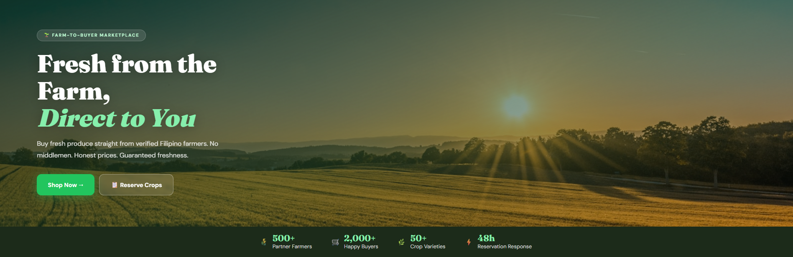

Identity Access
JWT-based authentication with role-specific access for Admin, Farmer, and Buyer. Passwords hashed with bcryptjs. Farmer accounts require Admin verification before going live.
01 / CASE STUDY • Agriculture / Marketplace
An Angular-based marketplace designed to connect Pampanga farmers with buyers and hospitality businesses.

AningKabalen is an Angular-based web application developed to address the fragmented agricultural supply chain of Pampanga — the Culinary Capital of the Philippines. Despite the province's booming food scene, small farmers from municipalities like Candaba and San Luis remain economically vulnerable due to middlemen who exploit the information asymmetry between producers and buyers.
The platform creates a transparent, real-time marketplace that connects verified Kapampangan farmers directly to consumers and the HORECA industry — Hotels, Restaurants, and Cafés — eliminating the middlemen entirely and empowering both sides of the supply chain.
Frontend Architecture and key functionality.
JWT-based authentication with role-specific access for Admin, Farmer, and Buyer. Passwords hashed with bcryptjs. Farmer accounts require Admin verification before going live.
Reactive Angular data binding pushes real-time inventory updates the moment a farmer posts a harvest — no page refresh needed. Built for the HORECA market's demand for predictable supply.
Cart-based checkout that deducts stock immediately upon order placement, notifies the farmer, and tracks the full delivery lifecycle from address input to completion.
Buyers pre-book upcoming harvests before the season starts. The farmer confirms within 48 hours — a digital handshake that gives farmers the financial confidence to plant, knowing the crop is already spoken for.
03 / VISUAL EXPLORATION
Explore the screens. Select any image for a closer look.